THE CATALOG
The games that defined a generation.
1984
Summer Games
C64 • Apple II • Atari • Sega
The one that started it all. Eight Olympic events, fluid animation, and a medal ceremony that made you feel like a champion. The joystick waggler that launched a franchise.
Sports / Olympic
Box art © Epyx Inc. Historical reference.
1985
Summer Games II
C64 • Apple II • Atari • Amiga
Eight new events: triple jump, rowing, javelin, equestrian, kayaking, cycling, fencing, and high jump. The sequel that proved the format had legs.
Sports / Olympic
Box art © Epyx Inc. Historical reference.
1985
Winter Games
C64 • Apple II • Atari • Amiga • NES
Hot Dog Aerials. Biathlon. Figure Skating with a 6.0 perfect score system. Seven events of frozen glory on 8-bit hardware that had no business looking this good.
Sports / Olympic
Box art © Epyx Inc. Historical reference.
1986
World Games
C64 • Amiga • Atari ST • Apple IIgs
Bull riding in Mexico. Cliff diving in Acapulco. Sumo in Japan. Caber toss in Scotland. Eight events from eight countries — before the internet made the world small.
Sports / International
Box art © Epyx Inc. Historical reference.
1987
California Games
C64 • NES • Lynx • Sega • DOS
Hacky sack. BMX. Surfing. Half-pipe skateboarding. Six events of pure SoCal sunshine. The best-selling game in the series — and the one everyone remembers.
Sports / Lifestyle
Box art © Epyx Inc. Historical reference.
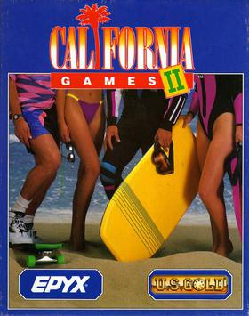
1990
California Games II
DOS • SNES • Sega Master System
Hang gliding. Jet surfing. Snowboarding before snowboarding was an Olympic sport. The sequel that proved California never goes out of style.
Sports / Extreme
Box art © Epyx Inc. Historical reference.
1984
Impossible Mission
C64 • Atari 7800 • Sega • NES
"Another visitor. Stay a while... stay FOREVER!" Professor Elvin Atombender's tower. 36 rooms. Puzzles. Platforming. The voice synthesis that haunted a generation.
Action / Puzzle
Box art © Epyx Inc. Historical reference.
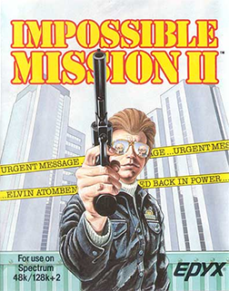
1988
Impossible Mission II
C64 • Spectrum • Amiga • DOS • NES
"Elvin Atombender is back in power." Eight towers. New puzzles. New security systems. The sequel that brought the mad professor back from the dead.
Action / Puzzle
Box art © Epyx Inc. Historical reference.
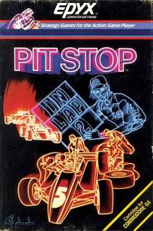
1983
Pit Stop
C64 • ColecoVision
The original. Formula racing with actual pit stops — tire changes and fuel management. Strategy meets speed. The foundation for what came next.
Racing / Strategy
Box art © Epyx Inc. Historical reference.
1984
Pitstop II
C64 • Atari • ColecoVision
Split-screen racing before split-screen racing was cool. Tire wear. Pit strategy. Two-player head-to-head on a Commodore 64. Revolutionary.
Racing / Strategy
Box art © Epyx Inc. Historical reference.
1983
Jumpman
C64 • Atari 400/800 • DOS
30 levels. Bombs to defuse. Ladders, ropes, and pixel-perfect jumps. Before Mario was Mario in the West, there was Jumpman — and it wasn't Nintendo's.
Platformer / Action
Box art © Epyx Inc. / CBS Electronics. Historical reference.
1979
Temple of Apshai
TRS-80 • Apple II • C64 • Atari
One of the first graphical RPGs ever made. Dungeon crawling before Diablo was a concept. Room descriptions read from the manual. Pure imagination fuel.
RPG / Dungeon Crawler
Box art © Epyx Inc. Historical reference.
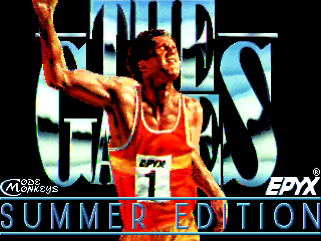
1988
The Games: Summer Edition
C64 • Amiga • DOS • Apple IIGS
The evolution. Velodrome cycling. Uneven bars. Rings. Diving with full rotation control. The last great Olympic game before Epyx's light went dark.
Sports / Olympic
Box art © Epyx Inc. Historical reference.
1990
Chip's Challenge
Lynx • DOS • Windows
149 levels of pure puzzle addiction. Collect chips, avoid monsters, find the exit. Shipped with Windows Entertainment Pack and consumed millions of office hours worldwide.
Puzzle / Logic
Box art © Epyx Inc. Historical reference.
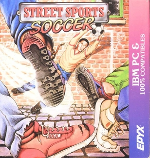
1988
Street Sports Soccer
C64 • Apple II • DOS
Street-level soccer on cracked asphalt and dirt lots. Pick your team from the neighborhood. Part of the Street Sports series that made sandlot competition a genre.
Sports / Street
Box art © Epyx Inc. Historical reference.
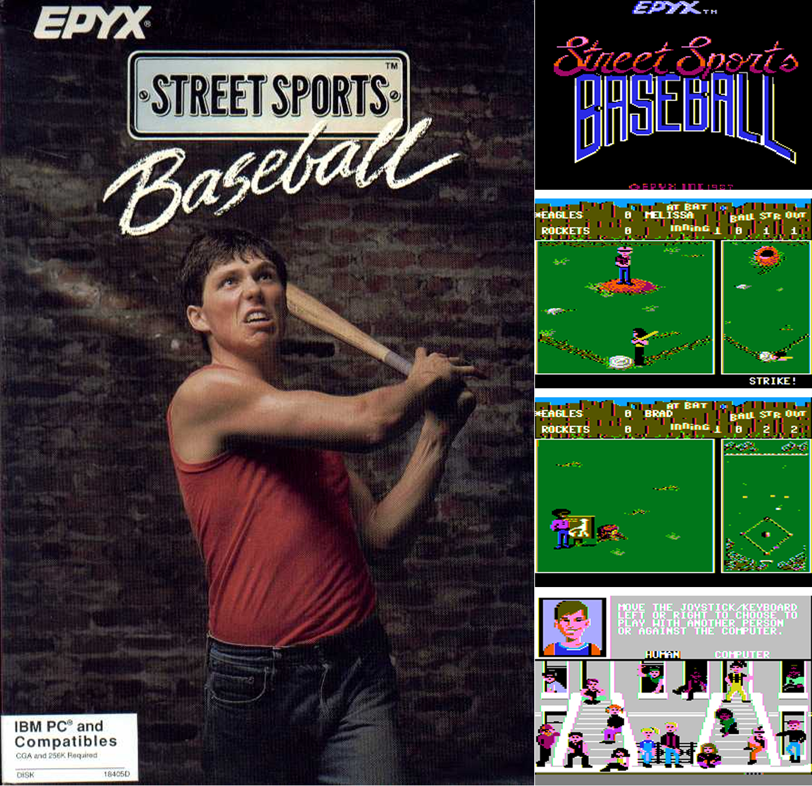
1986
Street Sports Baseball
C64 • Apple II • DOS
No stadiums. No uniforms. Just kids picking teams on a sandlot with a chain-link backstop. Street-level sports before EA made everything corporate.
Sports / Street
Box art © Epyx Inc. Historical reference.
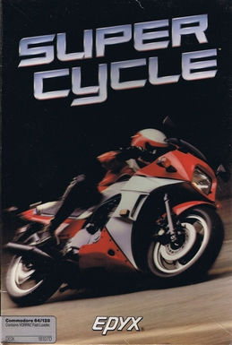
1986
Super Cycle
C64 • Amstrad • DOS
Motorcycle racing with a behind-the-rider perspective. Lean into curves, dodge traffic, hit the throttle. Pure arcade speed on home hardware.
Racing / Arcade
Box art © Epyx Inc. Historical reference.
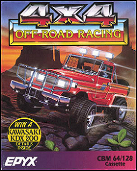
1988
4x4 Off-Road Racing
C64 • DOS • Amiga • Atari ST
Baja desert, mud trails, and monster trucks. Vehicle customization before it was standard. Win a Kawasaki KDX200 — details inside. Peak 80s box marketing.
Racing / Off-Road
Box art © Epyx Inc. Historical reference.
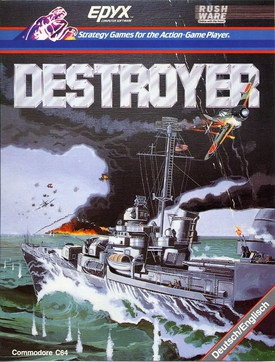
1986
Destroyer
C64 • DOS • Apple II
Naval warfare simulation. Command a destroyer through WWII scenarios. Radar, sonar, depth charges. Epyx proving they could do serious military sims alongside sports.
Simulation / Military
Box art © Epyx Inc. Historical reference.
1985
International Karate
C64 • Spectrum • Amstrad • Atari
One-on-one martial arts with exotic backgrounds. Scored by judges like real competition. Before Street Fighter II, this was how you settled it on 8-bit.
Fighting / Martial Arts
Box art © Epyx Inc. Historical reference.
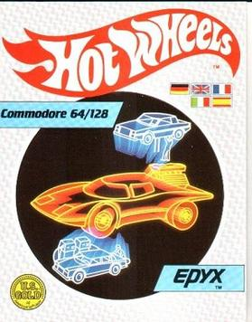
1987
Hot Wheels
C64 • Spectrum • Amstrad
Mattel-licensed racing on miniature tracks. Brand integration done right. Epyx was doing licensed IP games before it became the entire industry's business model.
Racing / Licensed
Box art © Epyx Inc. / Mattel. Historical reference.
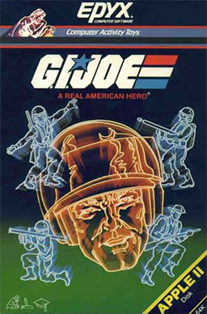
1985
G.I. Joe: A Real American Hero
C64 • Apple II • Atari
Hasbro-licensed action. Command the G.I. Joe team against Cobra. Another example of Epyx turning toy brands into playable games on home computers.
Action / Licensed
Box art © Epyx Inc. / Hasbro. Historical reference.
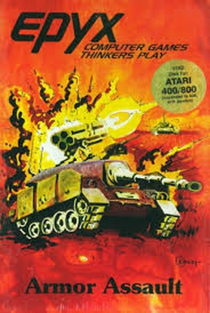
1982
Armor Assault
Atari 400/800
Hex-based tank warfare strategy. "Computer Games Thinkers Play." Early Epyx before the sports era — proving they could do deep strategy on home hardware.
Strategy / Wargame
Box art © Epyx Inc. Historical reference.
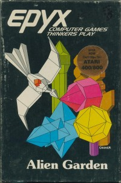
1982
Alien Garden
Atari 400/800 • C64
Abstract strategy in an alien ecosystem. Geometric creatures, procedural behavior. An experimental art-game decades before "indie games" existed as a concept.
Strategy / Experimental
Box art © Epyx Inc. Historical reference.
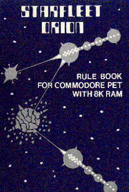
1978
Starfleet Orion
Commodore PET • TRS-80 • Apple II
The very first game published by Automated Simulations — before Epyx even existed. Space fleet tactical combat on 8K of RAM. Where it all began.
Strategy / Sci-Fi
Cover © Automated Simulations. Historical reference.
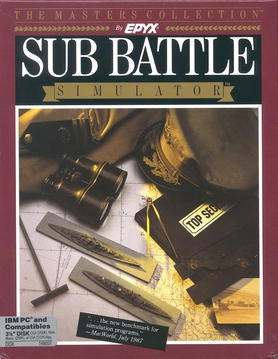
1987
Sub Battle Simulator
IBM PC • Amiga • Atari ST
The Masters Collection. WWII submarine warfare. Sonar, torpedoes, convoy hunting. "The new benchmark for simulation programs" — MacWorld, July 1987.
Simulation / Military
Box art © Epyx Inc. Historical reference.
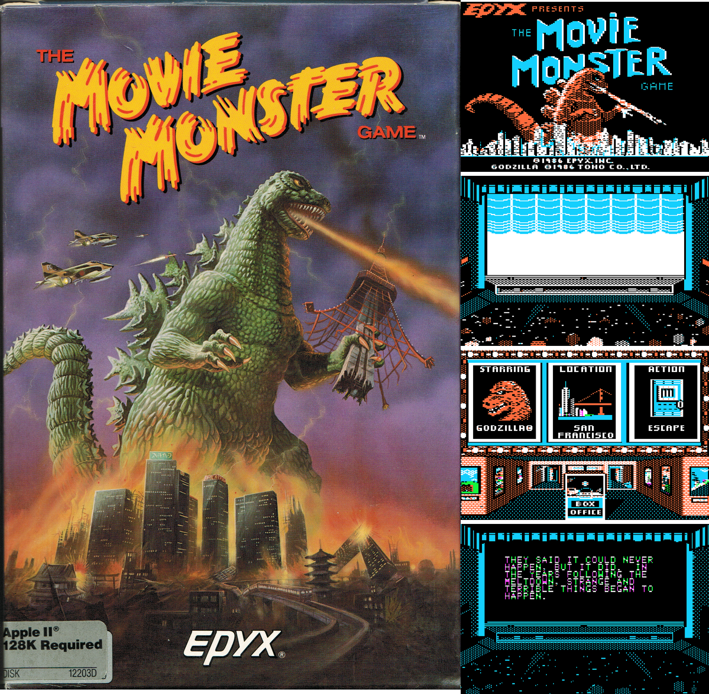
1986
The Movie Monster Game
C64 • Atari • Apple II • DOS
Six monsters. Four cities. Destroy landmarks, rescue the monster's child, or eat the city. Epyx's campy answer to the monster movie.
Action / Strategy
Box art © Epyx Inc. Historical reference.
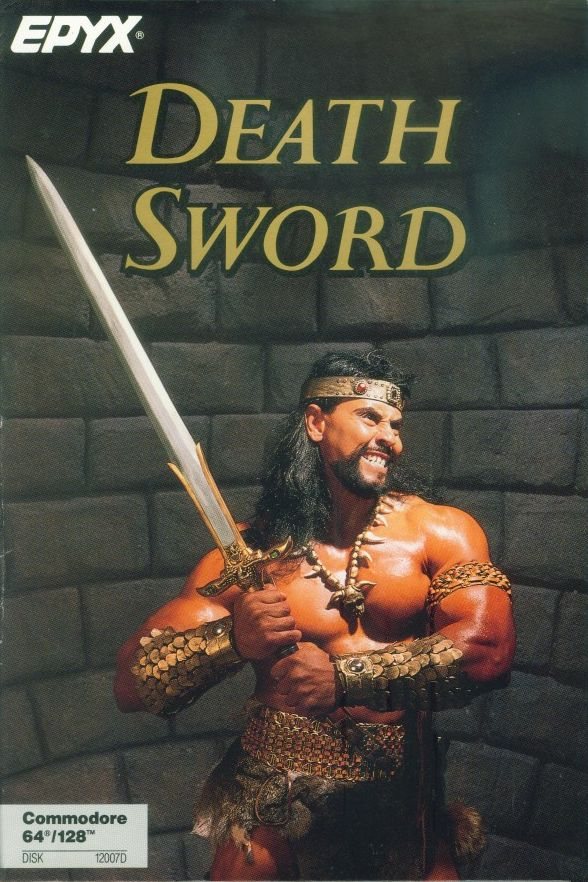
1988
Death Sword
C64 • Atari • PC
One-on-one sword fighting with a famous decapitation move. Epyx's North American release of Barbarian: The Ultimate Warrior.
Fighting / Fantasy
Box art © Epyx Inc. Historical reference.
THE MACHINES
The hardware that ran the magic.
Commodore 64
1982
CPUMOS 6510 @ 1.023 MHz
RAM64 KB
GraphicsVIC-II — 16 colors, 320×200, 8 sprites
SoundSID 6581 — 3 voices, legendary chip
Units sold~17 million
Epyx's primary platform. Summer Games, California Games, Impossible Mission — all built here first. The SID chip made the medal ceremonies sing.
Atari 800 / 400
1979
CPUMOS 6502 @ 1.79 MHz
RAM48 KB (800) / 16 KB (400)
GraphicsANTIC + GTIA — 256 colors, display lists
SoundPOKEY — 4 channels, distortion control
Units sold~2 million
Epyx's first home. Temple of Apshai and Jumpman debuted on Atari hardware. The display list architecture was ahead of its time.
Atari Lynx
1989
CPUWDC 65C02 @ 4 MHz + custom "Mikey" + "Suzy"
RAM64 KB + 128 KB ROM
Graphics160×102, 4,096 colors, hardware scaling/rotation
Sound4 channels, 8-bit DAC
Display3.5" backlit color LCD — first handheld with color
DESIGNED BY EPYX. Codenamed "Handy." Engineers Dave Needle and RJ Mical built it in Epyx's offices. The world's first color backlit handheld gaming device. Sold to Atari when Epyx ran out of money. A masterpiece they never got credit for.
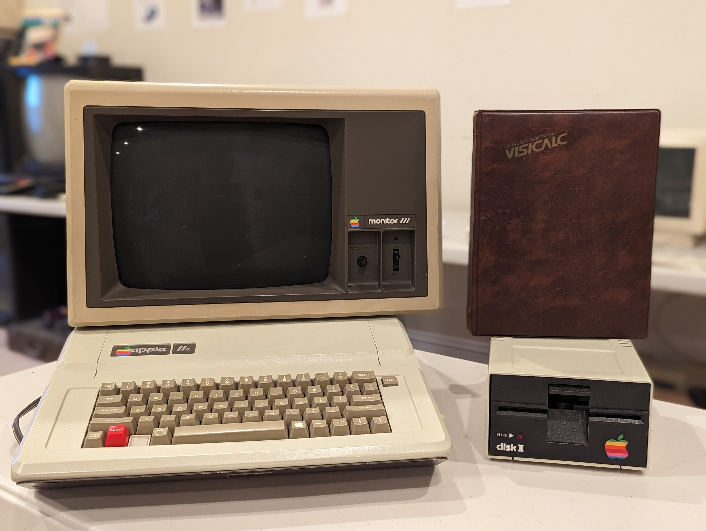
Apple II
1977
CPUMOS 6502 @ 1.023 MHz
RAM4–64 KB
GraphicsHi-Res: 280×192, 6 colors
Sound1-bit toggle speaker (beep)
Units sold~6 million
The school computer. The home computer. Temple of Apshai, Summer Games, Winter Games — all ported here. Limited palette, but Epyx made it work.
THE GEAR
Epyx didn't just make games — they made the tools to play them.
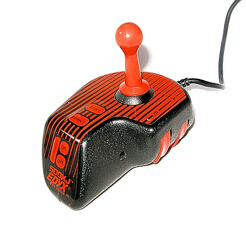
Epyx 500XJ Joystick
1984
The legendary 500XJ — the joystick that came with Summer Games and became the de facto standard for C64 gaming. Microswitched, ambidextrous, nearly indestructible. If you grew up with a Commodore 64, you held one of these. Still considered one of the best 8-bit joysticks ever made.
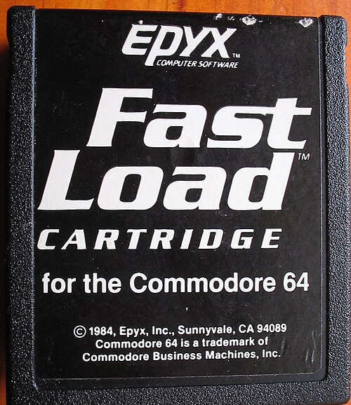
Fast Load Cartridge
1984
The C64's 1541 disk drive was painfully slow — 20+ minutes to load some games. Epyx solved it with a cartridge that accelerated disk loading by 5×. Plugged into the expansion port and just worked. Sold over 500,000 units. Epyx making hardware utilities before they made the Lynx.
Atari Lynx (Designed by Epyx)
1989
Codenamed "Handy." The world's first color backlit handheld gaming device — designed entirely by Epyx engineers Dave Needle and RJ Mical. Hardware sprite scaling, 4,096 colors, ComLynx networking. Sold to Atari when Epyx ran out of cash. A masterpiece they never got full credit for. Full story below.
THE TIMELINE
From garage to legend to legacy.
1978
Founded as Automated Simulations by Jim Connelley and Jon Freeman in Sunnyvale, California.
1979
Temple of Apshai ships — one of the first graphical CRPGs. The dungeon crawler era begins.
1983
Renamed to Epyx. Jumpman releases. The company finds its identity: action, sports, accessibility.
1984
Summer Games + Impossible Mission launch in the same year. Epyx becomes the name in sports gaming.
1987
California Games sells over 300,000 copies. Peak cultural relevance. Every kid in America knows the name.
1989
Atari Lynx handheld co-developed by Epyx. The hardware was ahead of its time. The company was running out of it.
1993
Epyx closes its doors. The games live on in emulation, memory, and the labs of those who remember.
2026
EpyxLab. A cloud innovation lab named in tribute. The legacy isn't dead — it evolved. Azure. AI. Infrastructure. Same spirit.
THE LYNX STORY
Epyx's greatest engineering achievement — and their final act.
The Problem
By 1987, Epyx was bleeding money. The games were great but the market was brutal. They needed a moonshot — something that would make them a hardware company, not just a software house dependent on platform holders.
The Engineers
Dave Needle and RJ Mical — two engineers who'd previously worked on the Amiga at Commodore — were hired to design a portable gaming system from scratch. They called it "Handy." It would do what no handheld had ever done: color graphics, hardware sprite scaling, and multiplayer via ComLynx cable.
The Technology
Two custom chips: "Mikey" handled audio, video, and the math coprocessor. "Suzy" handled the blitter — hardware-accelerated sprite scaling, rotation, and collision detection. In 1989. On a battery-powered handheld. This was engineering from the future.
The Sale
Epyx ran out of cash before they could manufacture it. Atari bought the rights for a fraction of its worth. Renamed it the Lynx. Launched it against the Game Boy. The Lynx was technically superior in every measurable way — color screen, hardware scaling, networking. The Game Boy won on battery life and price. History is not always fair.
The Legacy
The Lynx sold ~3 million units. A commercial disappointment by Game Boy standards, but a technical landmark. Every color handheld that followed — Game Gear, GBA, PSP, Switch — owes something to what Needle and Mical built in Epyx's offices. Chip's Challenge launched on Lynx. California Games went portable. The DNA is everywhere.
THE PEOPLE
The humans behind the pixels.
CO-FOUNDER
Jim Connelley
Co-founded Automated Simulations in 1978. Business mind behind the early RPG era. Navigated the company through the crash of '83 and the rebrand to Epyx.
CO-FOUNDER / DESIGNER
Jon Freeman
Game designer. Created Temple of Apshai — one of the first graphical CRPGs ever made. Established the company's identity before departing to form Free Fall Associates.
LEAD DESIGNER
Randy Glover
Designed Jumpman (1983) and Jumpman Junior. His level design philosophy — one mechanic per level, always a surprise — was decades ahead of modern indie game design principles.
DESIGNER / PROGRAMMER
Dennis Caswell
Programmed Impossible Mission (1984). Implemented one of the first uses of speech synthesis in a home computer game. "Stay a while... stay FOREVER!" — his code made it possible.
HARDWARE ENGINEER
Dave Needle
Co-designed the Amiga custom chips at Commodore. Then co-designed the Atari Lynx at Epyx. Later co-designed the 3DO. One of the most important hardware engineers in gaming history.
HARDWARE ENGINEER
RJ Mical
Co-architect of the Amiga's Intuition OS. Co-designed the Lynx alongside Needle. Created the Lynx's development tools. Later worked on PlayStation 3's Cell processor at Sony.
PRODUCER / DIRECTOR
Scott Nelson
Directed the Games series — Summer, Winter, World, California. Established the multi-event sports format that became Epyx's signature. Built a genre from nothing.
DESIGNER
Chuck Sommerville
Created Chip's Challenge for the Atari Lynx (1989). 149 levels of puzzle perfection. Later ported to Windows, where it consumed an estimated 100 million cumulative hours of office productivity worldwide.
TECHNICAL FIRSTS
What Epyx did before anyone else.
1984
Speech Synthesis in Home Computing
Impossible Mission featured digitized speech on a Commodore 64 — "Another visitor. Stay a while... stay FOREVER!" — using software-driven sample playback on the SID chip. No special hardware. Pure code.
1984
Rotoscoped Animation
Impossible Mission's character animations were traced from live-action video reference — rotoscoping on 8-bit hardware, three years before Prince of Persia made it famous.
1984
Split-Screen Multiplayer Racing
Pitstop II rendered two independent 3D-perspective racetracks simultaneously on a 1 MHz processor. Real-time split-screen with independent scrolling, pit stops, and tire degradation.
1984
Procedural Level Generation
Impossible Mission generated room layouts procedurally — no two playthroughs were identical. Roguelike principles in a platformer, years before the roguelike renaissance.
1987
Brand-Integrated Sports Gaming
California Games featured real sponsor logos (Ocean Pacific, Kawasaki, etc.) — one of the first games to use brand licensing as a revenue model and cultural authenticity signal.
1989
First Color Backlit Handheld
The Atari Lynx — designed by Epyx — was the first portable gaming device with a color backlit LCD screen. Hardware sprite scaling and rotation. Peer-to-peer multiplayer via ComLynx. In 1989.
1989
Hardware-Accelerated Sprite Scaling
The Lynx's "Suzy" chip performed real-time sprite scaling, rotation, and collision detection in hardware — capabilities that wouldn't appear in home consoles until the SNES Mode 7 a year later.
THE INFLUENCE
What came after — because of what came before.
Epyx → EA Sports
The multi-event sports format Epyx pioneered became the template for every Olympic/compilation sports game that followed. EA's entire sports division owes its conceptual DNA to Summer Games.
Impossible Mission → Prince of Persia
Jordan Mechner cited rotoscoped animation in games as inspiration. Caswell did it on C64 in 1984. Mechner refined it on Apple II in 1989. The lineage is direct.
Lynx → Every Color Handheld
Game Gear (1990), GBA (2001), PSP (2004), Switch (2017). The concept of a color, backlit, hardware-accelerated portable gaming device started in Epyx's offices in 1987.
Chip's Challenge → Puzzle Genre
Shipped with Microsoft Windows Entertainment Pack. Introduced millions of office workers to tile-based puzzle games. A gateway drug to Minesweeper, Sokoban, and eventually Portal.
California Games → Action Sports Culture
Before Tony Hawk. Before SSX. Before any "extreme sports" game existed as a category — California Games proved that skateboarding, surfing, and BMX could carry a game. An entire genre started here.
Temple of Apshai → CRPGs
One of the first graphical dungeon crawlers on home computers. The room-description-in-the-manual approach anticipated text-heavy RPGs. Preceded Ultima, Wizardry, and everything that followed.
THE LAB TODAY
Same spirit. New medium.
EpyxLab is a cloud innovation lab named in tribute to the studio that proved you could build extraordinary things with limited resources. The constraints have changed — from 64 KB of RAM to infinite cloud compute — but the philosophy hasn't: build something people remember.
Azure Infrastructure
Cloud architecture, hybrid connectivity, migration patterns, FinOps cost optimization. Building at scale.
AI & Copilot
AI Foundry, Copilot extensibility, M365 integrations, intelligent automation. The next interface.
Security & Identity
Zero Trust architecture, Entra ID, Defender XDR, conditional access. Protecting the perimeter that no longer exists.
DevOps & Automation
GitHub Actions, Infrastructure as Code, monitoring pipelines, GitOps patterns. Shipping faster.